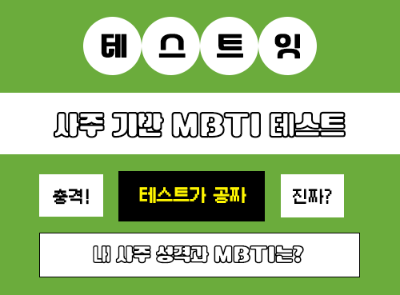

성격
얼굴
그외

테스트 시작하기
사주 정보 입력
출생 연도
출생 월
1월
2월
3월
4월
5월
6월
7월
8월
9월
10월
11월
12월
출생 일
출생 시간
모름
자정 ~ 01시
01시 ~ 03시
03시 ~ 05시
05시 ~ 07시
07시 ~ 09시
09시 ~ 11시
11시 ~ 13시
13시 ~ 15시
15시 ~ 17시
17시 ~ 19시
19시 ~ 21시
21시 ~ 23시
결과보기
다시 해보기
다른 테스트 해보기